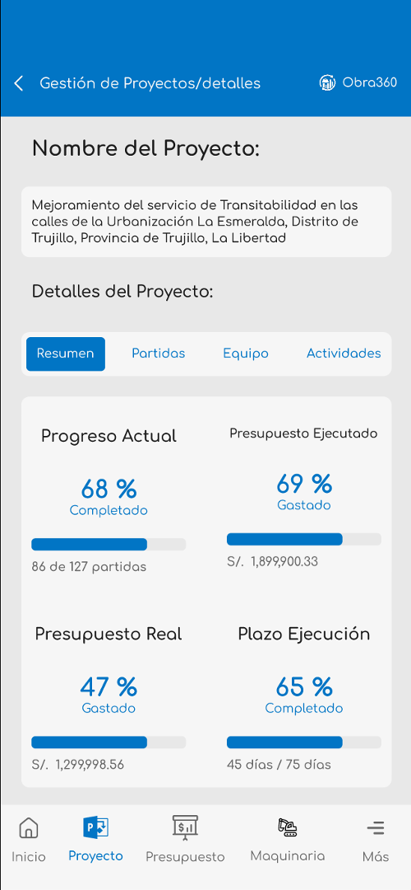
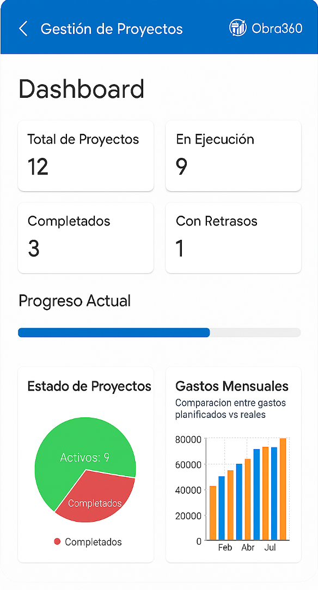
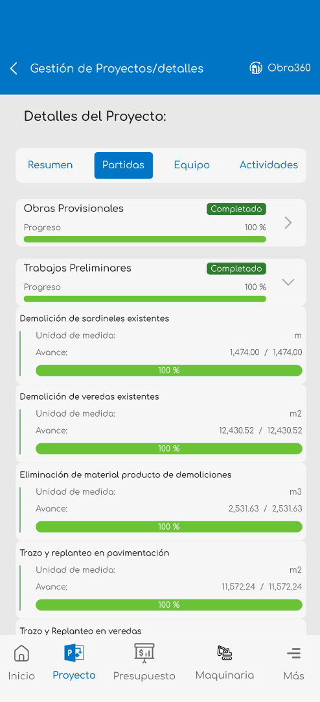
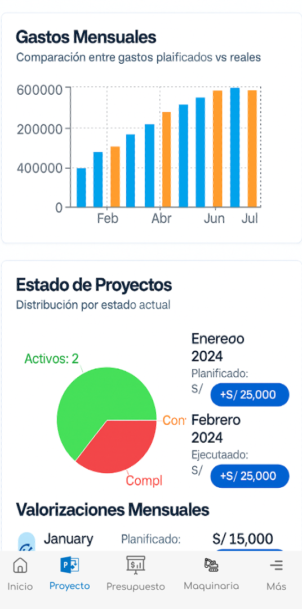
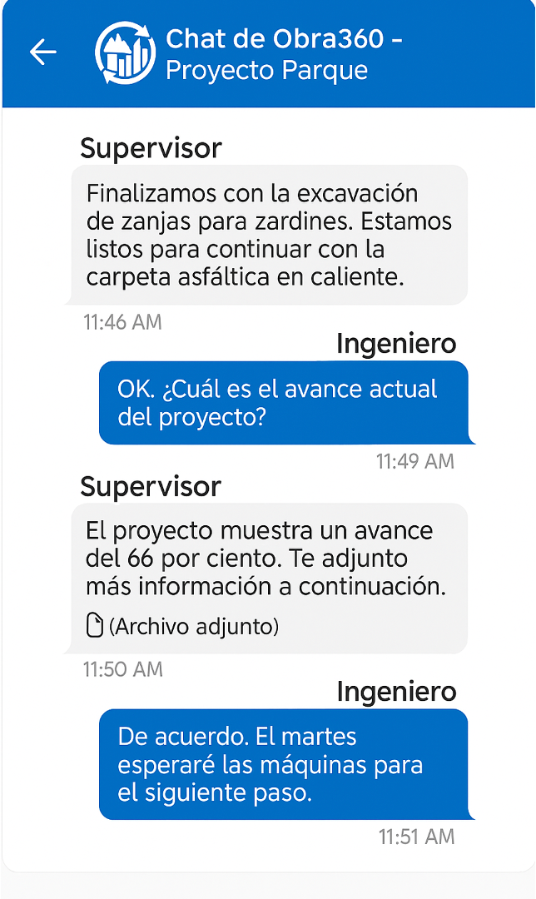
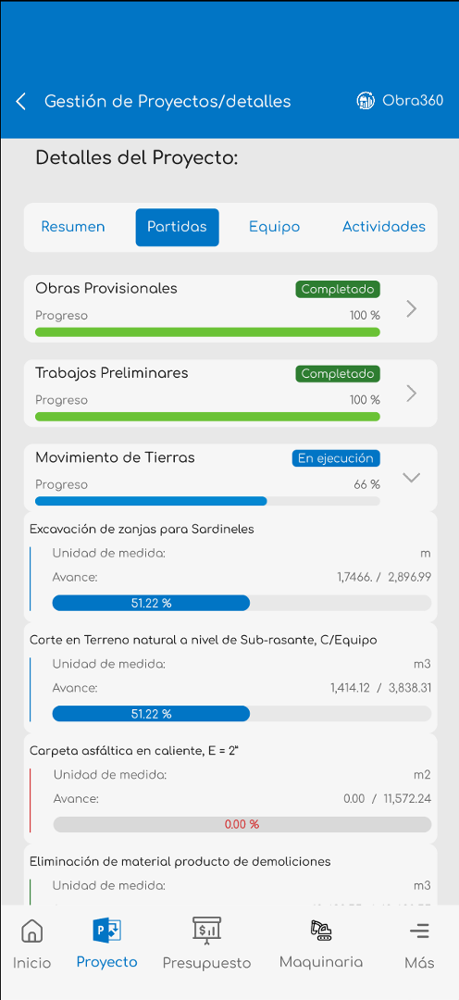
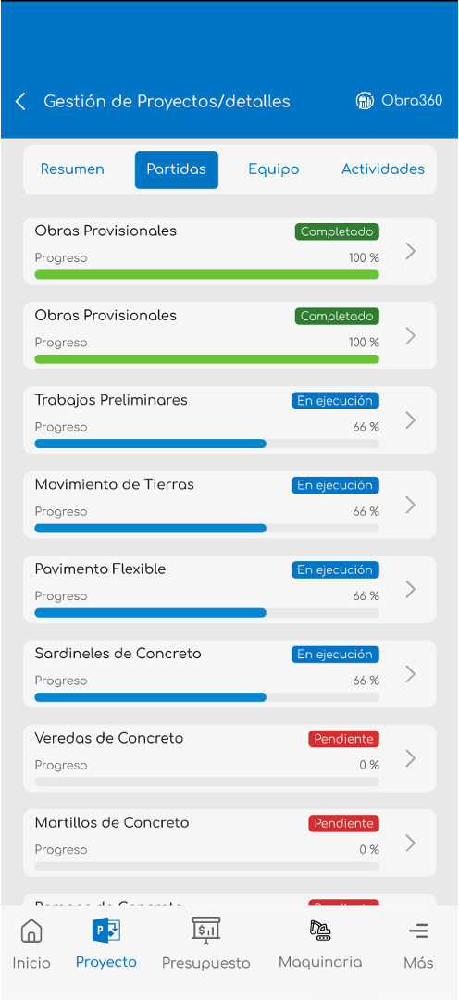
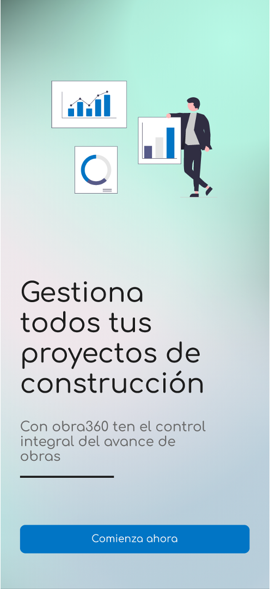

Obra360 es la aplicación móvil revolucionaria que transforma la gestión de proyectos de construcción. Monitorea, comunica y optimiza todos los procesos de obra desde tu dispositivo móvil.

La solución integral para modernizar la gestión de proyectos de construcción
Accede a información actualizada de todos los aspectos de tu proyecto: progreso, recursos, cronogramas y alertas instantáneas.
Coordina equipos de trabajo, asigna tareas, gestiona permisos y mantén comunicación fluida entre todos los participantes del proyecto.
Documenta inspecciones, reporta incidencias, registra avances y asegura el cumplimiento de estándares de calidad en cada fase.
Genera reportes detallados de productividad, costos, tiempos y rendimiento para tomar decisiones informadas.
Gestiona protocolos de seguridad, registra incidentes y asegura el cumplimiento de normativas de construcción.
Trabaja sin conexión en zonas remotas. Los datos se sincronizan automáticamente cuando recuperas la conexión.
Diseñada para ser fácil de usar, incluso en entornos de construcción exigentes

Vista general del proyecto con métricas clave

Asigna y sigue el progreso de actividades

Análisis detallados y métricas de rendimiento

Chat integrado para coordinación de equipos
Obra360 estará disponible en las principales tiendas de aplicaciones. Mientras tanto, solicita acceso anticipado y sé de los primeros en experimentar la revolución en gestión de construcción.
Sé parte del programa beta y obtén acceso exclusivo antes del lanzamiento oficial.
Solicitar Acceso

